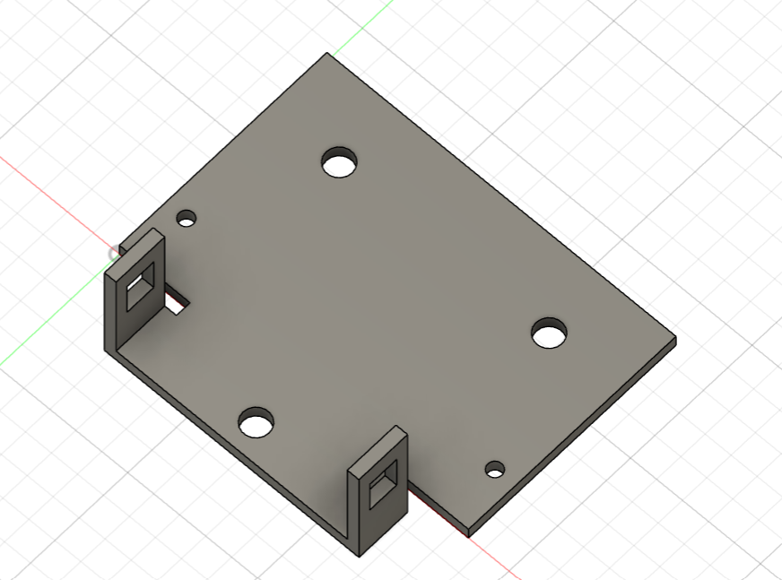
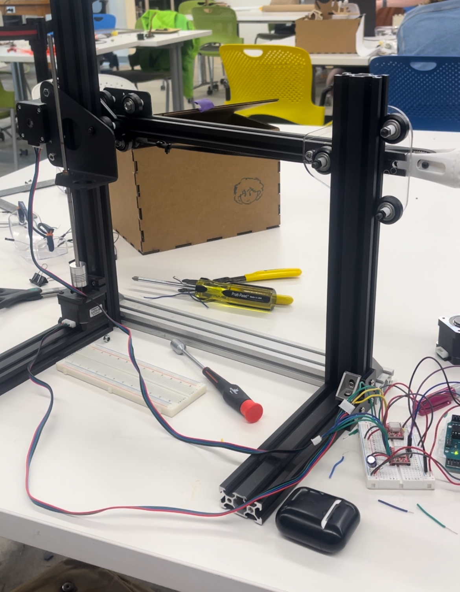

<div class="textcontainer">
<p class="margin"></p>
<h3>Final Project: Scanning Machine</h3>
<p class="margin"></p>
<p class="margin"></p>
</div>
<p class="margin"></p>
<p class="margin"></p>
<div class="flexrow">
<a id="btn" href="finalproject.zip" download>Download the files used for my final project!
</a>
</div>
<p class="margin"></p>
Making this final project was a wild ride the likes of which my academic career has never seen before. To remind you again, the basic idea behind my project is to make a 2D gantry that will have a proximity sensor attached to the front of it. This sensor will scan whatever is in front of the machine and then return an array which can then be plotted as a color map to reproduce whatever is in front of the machine. Already, just based on how the first attempt of my group’s drawing machine went, it was obvious to me that gantries are not my strong suit. Luckily I had a broken down 3D printer at my disposal which I was hopeful I could repurpose and refurbish into a 2D frame.
The basic construction of the hardware turned out to be not that bad. I started just by building a vertical frame out of aluminum extrusion as well as an arm (also made out of extrusion to run across that frame. To control the vertical movement I decided to have a stepper motor turn a threaded rod running up and down the y axis. The rod would have the arm of the machine attached to it via a little connector piece. The connector piece itself had wheels which would sit on either side of the extrusion and run up and down it, providing support without adding much friction. On the other side of the frame there would be a similar rolling piece which would further the support on that side The x axis would be controlled by a motor which would sit on the initial connector piece and it would turn a timer belt along the x axis. The timer belt would be connected on either side to a rolling piece sitting on the arm and this is where the ultrasonic sensor would live. Many of the actual connector pieces and specific sized threads I was able to recycle from the broken 3D printer I salvaged. There were a couple pieces I was missing but I was mostly able to model or cut them myself. There are many different models of replacement pieces for various 3D printers out there, which while none of them really fit exactly what I was trying to fix, were a great jumping off point for me to make my own sketches and models. Here are some examples of things I had to make for the construction.
<p class="margin"></p>
<div class="flexrow">
<img src="sensor holder.png">

</div>
<p class="caption">Pieces I modeled to hold the ultrasonic sensor and to hold the ultrasonic sensor holder.</p>
<p class="margin"></p>
And here’s the finished hardware doing what I had originally intended for it to do based on my MVP!
<p class="margin"></p>
<div class="flexrow">

</div>
<p class="caption">Hardware done!</p>
<p class="margin"></p>
<p class="margin"></p>
But that was the easy part. By which I mean it was still pretty brutal and took me about 2 days of being in the lab to get everything together and all constructed, but I can do hardware… It's software I struggle with. I struggled for a good 6 hours tinkering with my code from my mvp, but in the end Bobby had to come save me. He helped me write a very short, much better piece of code that did everything I wanted it to do with half the grief. We did have to pivot from the large sweeps across the x axis to incremental steps but I was more than fine with that. With that change in mind, the images the machine produces should essentially be pixel art of what’s in front of it. Here's the code:
<pre><code style="background-color: #2d2b33;">
#include <AccelStepper.h>
// Define the total steps per x and y distance
const long steps_xdistance = 950;
const long steps_ydistance = 20000;
// DEfine the number of stops to make on each axis
const int number_xstops = 50;
const int number_ystops = 50;
// Define the pins connected to the stepper motor drivers
#define X_STEP_PIN 5
#define X_DIR_PIN 6
#define Y_STEP_PIN 10
#define Y_DIR_PIN 11
// Define ultrasonic sensor pins
#define TRIGGER_PIN 9
#define ECHO_PIN 3
// Declare 2D array
int z_array[number_ystops][number_xstops];
// Initialize the stepper motors
AccelStepper stepperX(AccelStepper::DRIVER, X_STEP_PIN, X_DIR_PIN);
AccelStepper stepperY(AccelStepper::DRIVER, Y_STEP_PIN, Y_DIR_PIN);
void setup() {
// Set up the ultrasonic sensor pins
pinMode(TRIGGER_PIN, OUTPUT);
pinMode(ECHO_PIN, INPUT);
Serial.begin(9600);
Serial.println("starting");
// Set the maximum speed and acceleration for each motor
stepperX.setMaxSpeed(1000); // Adjust as needed
stepperX.setAcceleration(500); // Adjust as needed
stepperY.setMaxSpeed(1000); // Adjust as needed
stepperY.setAcceleration(500); // Adjust as needed
}
void loop() {
// put your main code here, to run repeatedly:
for (int i = 0; i < number_ystops; i++) {
// Serial.println((i * steps_ydistance) / (number_ystops - 1));
stepperY.moveTo((i * steps_ydistance) / (number_ystops - 1));
stepperY.runToPosition();
for (int j = 0; j < number_xstops; j++) {
stepperX.moveTo((j * steps_xdistance) / (number_xstops - 1));
stepperX.runToPosition();
z_array[i][j] = readUltrasonicSensor() ;
Serial.print((String) z_array[i][j] + ", ");
}
Serial.println();
}
}
float readUltrasonicSensor() {
// Trigger the ultrasonic sensor
digitalWrite(TRIGGER_PIN, LOW);
delayMicroseconds(2);
digitalWrite(TRIGGER_PIN, HIGH);
delayMicroseconds(10);
digitalWrite(TRIGGER_PIN, LOW);
// Measure the duration of the echo pulse
unsigned long duration = pulseIn(ECHO_PIN, HIGH);
// Convert the duration to distance (in centimeters)
float distance = duration * 0.034 / 2;
return distance;
}
</code></pre>
<p class="margin"></p>
The Code Bobby helped me return an array, which I didn’t have time to make arduino send to python (the only type of coding language I have any familiarity with) which is where I’d planned to plot the images of what had been scanned. In the end we just had to serial print the array as it was being printed and I manually copy pasted it into the python code that I wrote.
Speaking of, here’s the python script! It’s pretty simple but I’m also quite proud of it:
<pre><code style="background-color: #2d2b33;">
import numpy as np
import matplotlib.pyplot as plt
def list_to_2d_array(numbers, m):
n = len(numbers) // m # Calculate number of rows
array = np.array(numbers[:n*m]).reshape((n, m))
return array
numbers =[]
m = 50 # Number of columns
array = list_to_2d_array(numbers2, m)
def plot_2d_array(array):
plt.imshow(array, cmap='BuPu', interpolation='nearest')
plt.colorbar(label='Z values') # Add colorbar to show scale
plt.xlabel('X')
plt.ylabel('Y')
plt.title('2D Plot of Array')
plt.show()
plot_2d_array(array)
</code></pre>
<p class="margin"></p>
Here's a video of one of the first test flights seeing it move how it was supposed to:
<p class="margin"> </p>
<div class="flexrow">
<video controls>
<source src="firstflight.mp4" type="video/mp4">
</video>
</div>
<p class="caption">It moves It moves It moves
</p>
So how does it work? Well it actually works surprisingly well! Which is to say at all! Here’s the set of objects I placed in front of it for it to scan:
<p class="margin"></p>
<div class="flexrow">
<img src="sannedobject.jpg" >
</div>
<p class="caption">It's a little white square on top of my box...</p>
<p class="margin"></p>
...And here’s the resulting image! You can see it picked out the corner of the box and the white square on top of it. It’s actually a pretty decent image as well! Here’s some videos of the machine running!
<p class="margin"></p>
<div class="flexrow">
<img src="good scan!.png" >
</div>
<p class="caption">You can see it was able to recognize the two corners in front of it and reproduce them!</p>
<p class="margin"> </p>
<div class="flexrow">
<video controls>
<source src="howitscans.mp4" type="video/mp4">
</video>
</div>
<p class="caption">I can't believe it kind of works...
</p>
As far as ways I could improve it… there are many. Some easy things are just increasing the resolution of the scans. The above scan was done doing a max of 50 steps in either axis… It turned out fine but increasing the number of increments would make the resolution a lot better. Another thing is I do wonder if increasing the duration the machine stops at any given step would help it look a little bit better. My reasoning is based on how the ultrasonic sensor works by sending out pulses and then counting the time it takes to receive them again, it’s possible the machine wasn’t giving it enough time to actually go through that process. Finally, I think just a finer proximity sensor would be a great help to this project. On the topic of how the sensor sends and receives pulses, there’s a non-trivial distance between the part of the sensor that sends the pulses and the part that receives them, which I think can be confusing the for the sensor especially at the edge of objects, where part of the sensor might be x distance aways from the object in front of it, while the other part is some distance y. In the absence of actually doing anything about these problems, I’m quite pleased with this project and how far I’ve come in this class!
</div>